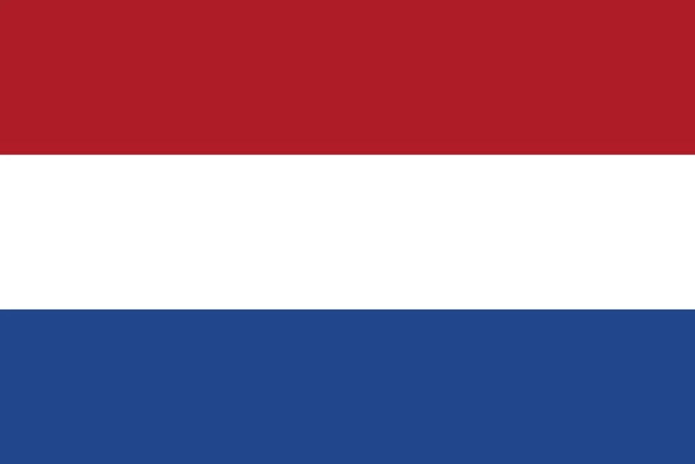

1. West Germany’s Triumph: Beckenbauer’s Glory and Müller’s Moment
July 7, 1974—Munich’s Olympiastadion is packed, 75,200 strong, buzzing with anticipation. The air is thick with tension as two footballing titans prepare to battle for the World Cup crown. On one side, the Netherlands—fluid, fearless, playing their dazzling Total Football. On the other, West Germany—clinical, composed, captained by the unshakable Franz Beckenbauer.
The game ignites instantly. Just two minutes in, Johan Neeskens smashes home a penalty without a single German player touching the ball—1-0 to the Dutch. Shockwaves ripple through the stadium. The Netherlands are rampant, weaving intricate patterns, pressing relentlessly. But West Germany refuse to crumble. They dig in, absorbing the Dutch onslaught, waiting for their moment.
It arrives in the 25th minute. A clumsy Dutch challenge gifts West Germany a penalty. Paul Breitner, ice-cool, buries it. 1-1. The Olympiastadion erupts. Suddenly, momentum shifts. The Dutch still dazzle, but now the Germans bite back. And just before halftime, the moment of destiny—Gerd Müller, the fox in the box, spins on a dime and rifles a shot past Jan Jongbloed. The crowd roars—2-1 West Germany.
The second half is a war of wills. The Netherlands keep coming, throwing everything forward. Cruyff glides, Neeskens snaps at chances, but Sepp Maier is impenetrable in goal. The Germans hold their nerve, closing ranks, blocking every Dutch effort. The final whistle blows—West Germany are champions.
Six wins, one loss, 13 goals. Müller, with his ninth of the tournament and 14th overall, cements his place in history. “He’s lethal,” Dutch coach Rinus Michels sighs. Beckenbauer, arms aloft, lifts the trophy—West Germany’s second World Cup, won on home soil.
Munich explodes in celebration. Pints are raised in pubs across the nation. “For the fans,” Müller grins. The Dutch are left to wonder what might have been. “We played beautiful football,” Cruyff reflects, “but they were steel.”
West Germany had the flair, but more importantly, they had the resilience. They bent, but never broke. And in the end, they had the cup.

2. Cruyff’s Total Football Falls Just Short
July 7, 1974—The Dutch revolution has reached its grand finale. For a month, Johan Cruyff and company have bewitched the world with their hypnotic Total Football—fluid movement, seamless passing, the beautiful game at its peak. Now, standing between them and destiny is West Germany, a nation built on discipline and fire.
The perfect start—within two minutes, a German boot barely brushes Cruyff, and the referee points to the spot. Neeskens steps up, slams it home. 1-0, the Netherlands. They don’t just lead; they dominate. The orange shirts whirl, pressing, probing, suffocating the Germans.
But then—resistance. West Germany steady themselves, claw their way back into the fight. Breitner wins and converts a penalty, dragging the hosts level at 25 minutes. The Dutch keep attacking, but a moment of magic undoes them. Müller, ever the predator, turns in the box and drills it past Jongbloed—2-1 just before halftime.
Total Football is breathtaking, but the Germans refuse to let it overwhelm them. The second half is an exercise in frustration for the Dutch. Cruyff dribbles, dances, but there’s no way through. Neeskens fires, but Maier is a fortress. Rensenbrink dazzles, but the German defense, led by Beckenbauer, stands firm.
The whistle blows. It’s over. The Dutch played the most exhilarating football of the tournament, but the trophy is not theirs. Five wins, 15 goals, countless moments of brilliance, but no World Cup. “We played art,” Cruyff sighs. “They played to win.”
Munich celebrates, but in Amsterdam, there’s only heartbreak. “So close,” Rep mutters. “It was ours,” Jansen says. The world applauds the Dutch, but history only remembers winners.
Total Football is immortal, but West Germany took the crown.
3. Poland’s Breakout Blitz: Lato’s Golden Charge
July 3, 1974—Frankfurt’s Waldstadion is drenched, rain lashing down as Poland and West Germany step onto a pitch turned to mud. This isn’t just football; it’s a battle in the trenches. At stake? A place in the World Cup final. For Poland, it’s been a dream run, an electric surge through the tournament that has stunned the world. But standing in their way is the relentless efficiency of the host nation.
They’ve been fearless so far. Poland tore through the group stage—stunning Argentina 3-2, annihilating Haiti 7-0, and outclassing Italy 2-1. Lato, the tournament’s breakout star, has been unstoppable. In the second round, they edged Sweden 1-0, outmaneuvered Yugoslavia 2-1, and shocked Brazil 1-0, Lato once again the hero. But now, under the torrential Frankfurt skies, they meet their toughest test.
The conditions are brutal—standing water slows the ball, every pass a gamble. Poland still push, still play their attacking game. Lato and Andrzej Szarmach carve out chances, but the German defense, led by the imperious Franz Beckenbauer, refuses to crack. Sepp Maier, a fortress in goal, keeps out everything Poland throw at him.
Then, the heartbreak. Minute 76. The legendary Gerd Müller, always in the right place at the right time, pounces. A quick turn, a snap shot, and it’s in. 1-0, West Germany. The Polish players glance at the heavens, as if begging for the rain to let up, for one last chance. It doesn’t come. The whistle blows. The fairytale is over.
Poland falls, but they don’t collapse. There’s still one last fight—third place against Brazil. And in Munich, they seal their legacy. Again, it’s Lato, his seventh goal of the tournament, a Golden Boot performance, that secures a 1-0 win. Poland leave with bronze, but more than that, they leave with respect. Five wins, 16 goals, and a new footballing power is born.
Frankfurt may have been a storm, but Poland’s run was a lightning bolt. "We shocked them all," Lato beams. “A new force in football,” coach Kazimierz Górski nods. The world takes notice. Poland aren’t just here to play—they’re here to stay.
4. Brazil’s Fade: The End of the Samba Reign
July 6, 1974—Munich’s Olympiastadion, a stage that once saw Brazil lift the World Cup in triumph. But this time, there’s no glory to chase—only a third-place match against Poland, a game no champion ever dreams of playing.
Brazil arrived in West Germany as the reigning kings of football. But they were no longer the dazzling side of 1970. Pelé was gone. The fluid samba rhythm that had captivated the world was stuttering. And as the tournament progressed, it became clear—this wasn’t the same Brazil.
The signs were there early. A goalless draw against Scotland. Another 0-0 against Yugoslavia. Then, a flash of the old brilliance—a 3-0 win over Zaire. In the second round, Rivellino’s left foot powered them past East Germany and Argentina. Hope flickered. But then came the reality check—the Netherlands, masters of Total Football, dismantled them 2-0. Johan Neeskens and Johan Cruyff struck, and Brazil, for the first time in years, looked powerless.
Now, against Poland, it’s about pride. About salvaging something. But the magic isn’t there. The moves are slower, the passes lack bite. Poland, fearless and full of energy, take the game to them. Grzegorz Lato, the tournament’s deadliest marksman, strikes in the 76th minute. 1-0. Brazil don’t have a response. The final whistle comes, and the unthinkable is real—Brazil finish fourth.
In the dressing room, there’s silence. “We faded,” Jairzinho sighs, staring at the floor. Three wins, two draws, two losses. Just six goals in seven games. The once-unbeatable machine had stalled.
Outside, Poland celebrate, the new force rising. In bars and cafés, fans replay Brazil’s glory days, but now, it feels like history. “We had it once,” Rivellino says softly, “but it slipped.”
Brazil would rise again, but in 1974, their golden era dimmed. The kings had fallen.

5. East Germany’s Stunning Upset: A Cold War Shock for the Ages
June 22, 1974—Hamburg’s Volksparkstadion, a packed house of 60,200 fans buzzing with anticipation. The World Cup’s biggest grudge match is about to unfold: West Germany, the tournament hosts and one of the favorites, taking on their political rivals, East Germany, in a showdown charged with Cold War tension.
Few gave East Germany a chance. Their squad, largely unknown outside Eastern Europe, faced a West German side stacked with superstars—Franz Beckenbauer, Gerd Müller, and the great Sepp Maier in goal. The hosts had already beaten Chile 1-0 and steamrolled Australia 3-0. This should have been routine.
But football has a way of defying expectation.
For 76 minutes, the match is a war of attrition. West Germany press, attack, and probe, but East Germany hold firm. Joachim Streich leads counterattacks, the defense throws bodies in front of shots, and keeper Jürgen Croy stands tall. The underdogs refuse to fold.
Then, the moment that rewrites history. Minute 77. A long ball forward. Jürgen Sparwasser times his run perfectly, slicing through the West German backline. One touch, then another, before he fires past Maier. The net ripples. East Germany lead. The stadium is stunned.
West Germany push forward desperately, but the equalizer never comes. The final whistle blows, and Sparwasser is mobbed by his teammates. The scoreboard reads 1-0. An unthinkable result.
"We did it!" Sparwasser beams, his voice barely audible over the deafening cheers. East Germany, the unheralded outsiders, had just handed their mighty rivals a humiliating defeat.
Shockwaves ripple through the tournament. "We underestimated them," Beckenbauer admits, still dazed. "We got caught."
In bars and living rooms across both Germanys, the game is dissected, debated, replayed. "A stunner," Gerd Müller shrugs. For the East, it’s more than a victory—it’s validation. Coach Georg Buschner, grinning ear to ear, calls it "a win for the people."
But the fairytale ends quickly. The second round brings reality crashing down—defeats to Brazil (1-0) and the Netherlands (2-0), plus a 1-1 draw with Argentina. The dream fades, but the memory of Hamburg never will.
For West Germany, the loss is a wake-up call. They regroup, recalibrate, and go on to win the tournament. But for one night in June 1974, under the Hamburg floodlights, the unthinkable happened. East Germany, against all odds, stood taller than their mighty neighbors. And that, forever, is their moment.
6. Scotland’s Heartbreak: The Unbeaten Team That Went Home
June 22, 1974—Frankfurt’s Waldstadion. Scotland, scrapping for their World Cup lives, take the field against Yugoslavia in their final group match. The stakes couldn’t be higher. Win, and they advance. Draw, and they could still go through—if the goal difference gods are kind. Lose? Don’t even think about it.
Scotland’s campaign had been one of near-misses and stubborn resistance. A goalless draw against Brazil was proof of their grit. A 2-0 win over Zaire showed their quality. Now, they just needed one more push.
The match is tense, nervy, a chess game of counterattacks and hard tackles. Denis Law, playing his final World Cup, orchestrates from midfield, while Billy Bremner’s leadership keeps Scotland steady. They trade blows with Yugoslavia, but neither side finds a breakthrough. Then, the hammer blow. Minute 81. Stanislav Karasi rises above the Scottish defense and heads home. 1-0, Yugoslavia.
Scotland are reeling. But they don’t collapse. With time ticking away, they launch one final assault. Minute 88. A long ball into the box. Joe Jordan, fearless as ever, rises between two defenders and powers in the equalizer. 1-1.
The Scots celebrate like they’ve won. But celebrations turn to anxious glances as news filters through—Brazil have beaten Zaire 3-0. It all comes down to goal difference. Scotland, unbeaten, with three draws, are level on points with Brazil and Yugoslavia. But their two goals aren’t enough. They’re out.
“Gutted,” Kenny Dalglish mutters, barely able to process the heartbreak. Three matches. No losses. But no second round.
"It’s cruel," sighs Bremner. "We fought like hell."
Back home, the frustration is palpable. How can an undefeated team be eliminated? In pubs across Glasgow and Edinburgh, fans replay Jordan’s header, Bremner’s midfield mastery, and the heroic defensive stands against Brazil. But it’s not enough to change the outcome.
The Scots had walked the tightrope of hope, only to fall. The nearly men of 1974, leaving Germany without a loss—but without a future in the tournament.
"Football’s a brutal game," sighs Law. Scotland had been brave. They had been defiant. But fate had other plans.

7. Zaire’s Wild Ride: The Chaos, Courage, and Controversy of Africa’s World Cup Debut
June 14, 1974—Gelsenkirchen’s Parkstadion, a sea of 40,079 eager fans, watches history unfold. Zaire, the first-ever sub-Saharan African nation to qualify for a World Cup, step onto the grandest stage. The moment is enormous. The challenge? Even bigger.
Grouped with Scotland, Yugoslavia, and Brazil, Zaire arrive as wild cards. Their squad, led by coach Blagoje Vidinić, carries the hopes of a continent, but they are diving headfirst into the deep end. They aren’t just battling teams—they’re fighting history, expectations, and the glaring spotlight of the world.
Their opener against Scotland starts promisingly enough. They’re fearless, attacking with raw energy. Ilunga Mwepu, a lively presence in defense, surges forward, showing flair. Ndaye Mulamba, their star striker, looks dangerous. But Scotland are too polished. Billy Bremner dictates the midfield, Joe Jordan’s late header seals a 2-0 loss. A respectable start, but Zaire’s real test is yet to come.
Then comes Yugoslavia. And disaster. June 18—It’s a whirlwind, a blur, a demolition. Yugoslavia’s Dušan Bajević scores just eight minutes in. By halftime, Zaire are 6-0 down. The final whistle brings a 9-0 humiliation—the heaviest defeat in World Cup history at the time.
Zaire’s players look lost, shattered. The gulf in experience is brutally exposed. "We were overwhelmed," one player later admits. "We had never faced a team like that before."
The football world shakes its head. This was the danger—throwing an untested team into the lion’s den. But Zaire’s wild ride isn’t over. Not yet.
Mwepu’s Moment of Madness Next up, the reigning champions: Brazil. No Pelé, but still stacked with talent—Jairzinho, Rivellino, and a squad dripping with samba swagger. The match itself? A routine 3-0 win for Brazil. But what steals the headlines is a moment that defies logic.
Minute 85. Brazil win a free-kick just outside the Zaire penalty box. Rivellino lines it up. The whistle hasn’t blown yet. And suddenly—BOOM!
Ilunga Mwepu charges from the wall and boots the ball downfield before the kick can even be taken. Chaos. Confusion. The referee looks stunned. The Brazilian players stare in disbelief. The crowd erupts in laughter.
What just happened? For years, the moment is misunderstood—mocked as a bizarre blunder, a lack of footballing knowledge. But Mwepu later reveals the truth. The Zaire squad, threatened by their own government after the 9-0 loss, were terrified of another humiliation. "We were told if we lost 4-0, we wouldn’t be allowed to return home," he admits. His act was not ignorance—it was an act of desperate defiance, a symbol of resistance.
Zaire’s World Cup ends without a win. Three matches, three losses, no goals scored, 14 conceded. A brutal record on paper. But in truth, they leave with something greater.
They were the pioneers. The first to break through, to represent Africa on football’s biggest stage. Their journey—no matter how chaotic—paved the way for Cameroon’s heroics in 1990, Senegal’s magic in 2002, Ghana’s near-miss in 2010.
"We were learning," Mwepu says, a grin returning to his face.
For some, Zaire’s ride is a punchline. For others, it’s a crucial first step. And in bars across the world, the clips still play—Mwepu’s boot, Yugoslavia’s blitz, a nation’s baptism by fire.
A tale of madness, courage, and a moment no one will ever forget.